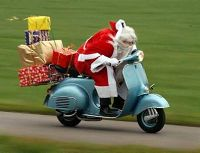
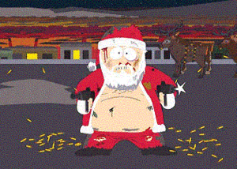
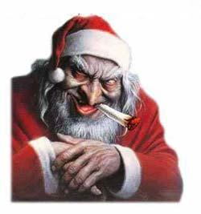

Santa Claus
 De: La Frikipedia, la enciclopedia extremadamente seria.
De: La Frikipedia, la enciclopedia extremadamente seria.
De la serie grandes personajes:
Santa Claus conspirando junto con
Hasecorp.
| Nacimiento
|
En la primera Navidad.
|
| Muerte
|
Cuando se deje de creer en él o un inmortal le corte la cabeza.
|
| Ocupación
|
narcotraficante y fiolo
|
| Nacionalidad
|
Finlandés.
|
| Malo o bueno
|
Más malo que los Comunistas y Católicos juntos.
|
| Atentados contra la humanidad
|
Crear toda institución de él mismo, regalar Wombats.
|
| Religión
|
Pastafarismo / Adoración de él mismo,
|
| Notas
|
Sólo mira esos ojos 10 minutos y requerirás un exorcismo... AGUAS! Está atrás de ti y tiene un cuchillo! Corre!!!
|
«Soy el que reparte amor en las casas de los niños por las noches en Navidad, mis regalos los pueden encontrar bien mirando debajo de sus camas o bien en las de sus papás, pero quiero dejar claro que yo no desvirgué a Macaulay Culkin»
~ Santa Claus haciendo su descargo ante el juez
Santa Claus, también conocido como Papá Noel, es un viejo barbudo que desplazó a Jebús del centro de atención en las Navidades.
Historia
Santa Claus nace en 1492 D.C. en Laponia, región al norte de Finlandia (Así es, hay civilización al norte de Finlandia) y es bautizado con el nombre de pila de Mulupuki y es bendecido con el don de la inmortalidad. Sólo puede morir si otro inmortal le corta la cabeza. Nació con barba (Igual a su gemelo malvado, Mike Knox). Con tan sólo 6 años sufre ataques de amnesia. (según comenta, una dichosa canción le taladraba la cabeza).
Desde joven muestra cierta debilidad por la joven y apuesto reno homosexual de nombre Rudolf con el que mantendrá una relación estable.
Mulupuki resulta emprendedor y monta el primer Toys'R'Us de la historia en 1790. El 90% de la plantilla no tiene contrato y es de raza élfica-enana. Aristócratas irlandeses de la época, haciendo acopio de las leyes que amparan el por entonces Despotismo Ilustrado, proponen una moción de censura contra el joven empresario que se ve obligado a cerrar la fábrica y liberar al 30% de la plantilla de Duendes que se instalan en favor de los aristócratas en Irlanda.
Tras el cierre de la fábrica cae en una depresión y se exilia en el Polo Norte. Allí, con el rico e infinito stock que almacenaba de su anterior proyecto empresarial empieza en 1820 una campaña de promoción de caracter no guvernamental. La ONG que se bautiza con el nombre de Santa Claus, nace con la firme decisión de regalar a cada niño pobre, sucio y de mocos pegados al labio superior, uno de sus productos un día concreto del año.
La campaña tiene notable éxito y durante muchos años la repite cada año concretando como día de actuación altruista la noche del 24 al 25 de diciembre.
En 1950 los niños norteamericanos, malcriados por la rica etapa de posguerra que vivían los Aliados, protestan a nivel mundial por el derecho de todo niño a un regalo por parte del señor gordo de la barba. Mulupuki redacta un comunicado público en el que explica que dicha demanda es imposible de solventar en una sola noche por volumen de clientes. La crisis deriva en un contrato privado entre Mulupuki y la Compañía Coca Cola; de tal manera que Mulupuki realizará desde entonces todas las campañas de la compañía a cambio de que ésta le provea de una Coca Cola especial que beben los renos para volar durante toda la noche a la velocidad de la luz. Desaparece entonces la ONG Santa Claus y nace la marca comercial Papa Noel & Asociados Enanos S.L.
El contrato remonta el antiguo proyecto empresarial de Mulupuki y recupera a sus antiguos empleados ofreciendoles un contrato de enano digno y el derecho a Viviendas de Hielo de protección Oficial.
En la actualidad Mulupuki subcontrata el trabajo de reparto para la única noche que tiene que doblar la espalda.
Rudolf sigue siendo su pareja actual.
Por si no lo sabíais, es una farsa para que los padres se gasten una fortuna en regalos.
Teoría científica sobre Papa Noel
Santa Claus con un pariente lejano
 Santa Claus en su trineo (entregas de ultima hora)
Conclusiones sobre la no existencia de Papa Noel:
- Ninguna especie conocida de reno puede volar. No obstante, existen 300.000 especies de organismos vivos pendientes de clasificación, y si bien la mayoría son insectos y gérmenes, no es posible descartar completamente la existencia del reno volador de Laponia septentrional.
- En la tierra habitan alrededor de 2.000 millones de niños (considerando únicamente como tales a los menores de 18 años). Si tenemos en cuenta que Papa Noel únicamente se ocupa de los niños de confesión cristiana, la cifra de niños bajo su responsabilidad se reduce a un 15% del total, alrededor de 378 millones de niños. Según las estadísticas de población mundial facilitadas por la ONU, corresponden a 3,5 niños (oooooohhhhh niños a la mitad) por hogar lo que sitúa en 91,8 millones los hogares que debieran ser visitados, suponiendo, claro esta, que haya al menos un niño por hogar que se haya portado bien.
- Papa Noel dispone de 31 horas en Nochebuena para realizar su trabajo, gracias a los diferentes usos horarios y la rotación de la tierra. Esto supone 822,6 visitas por segundo. En otras palabras Papa Noel dispone de una milésima de segundo para aparcar, salir del trineo, bajar por la chimenea, llenar los calcetines y en su caso dejar los demás regalos bajo el árbol, comerse lo que le hayan dejado, trepar otra vez por la chimenea, subir al trineo y marchar a la siguiente casa. Suponiendo que estas 91,8 millones de paradas este distribuida uniformemente sobre la superficie de la tierra (lo cual es completamente falso pero en este caso puede servirnos para los cálculos) habrá 1,2 km. entre casa y casa lo que hace un total de 110 millones de km. De todo ello se deduce que el trineo de Papa Noel se mueve a una velocidad media de unos 1000 km./seg., 3000 veces la velocidad del sonido, 70 veces la velocidad de la sonda espacial Ulises, el vehículo más veloz construido jamas por el ser humano, y 450.000 veces la velocidad punta de un reno convencional.
 Imagen mucho mas realista que la de arriba
- La carga del trineo, suponiendo que cada niño sólo se lleve un tente de tamaño medio, 0,9 kg, seria del orden de 321.000 toneladas, todo ello excluyendo el peso del propio Papa Noel, al que la iconografía clásica siempre describe como bastante orondo. Un reno convencional no es capaz de transportar más alla de 150 kg, aun suponiendo que el reno volador de la Laponia septentrional pudiera multiplicar por diez esa capacidad de carga, serian necesarios unos 214.000 renos voladores.
- Sin contar con el peso del propio trineo, hablaríamos de 353.000 toneladas de materia viajando a 1000km/seg. Un movimiento de masas de tal calibre crearía una resistencia aerodinámica enorme, lo que supondría un calentamiento de los renos similar al que experimenta una nave espacial a su entrada a la atmósfera. Cada uno de los renos de cabeza absorbería un trillón de kilojulios por segundo lo que hace estimable que el tiro completo se vaporizase en 4,26 milésimas de segundo (Aunque puede llevar un casco impermeable). Papa Noel mientras tanto sufriría unas fuerzas centrifugas 17.500 veces superiores a las de la gravedad, lo cual, estimando su peso en unos benévolos 120 kg, significaría que seria aplastado contra el asiento con una fuerza equivalente a 2.000.000 de kg, lo cual le produciría la muerte instantánea.
Conclusión:
¿Papá Noel no existe? Eso es mentira. Jack Bauer es Papá Noel. Papá Noel son tus padres. Jack Bauer es Dios y Dios es el padre de todos.
 Santa Claus dando su visto bueno a la operación "Caca de Reno"
Parece que a Santa le llegó temprano la Navidad...
Teoría de por qué se puede creer en Santa.
Revisando hechos blíblicos llegué a la conclusión de por qué puede existir.
- Si celebras navidad y recibes sus regalos de Santa Claus, ¿por qué no creer en Santa?
- Si los que creen en la Biblia creen que un hombre (Jesús) vagó por un desierto más de 10 días sin agua, ¿por qué no creer en Santa?
- Si hay millones de personas que creen en dioses, espíritus y demás divinidades que hacen desastres y milagros, pero que nunca los vieron, ¿por qué no creer en Santa?
- Si los judíos creen que un tipo con un palito abrió las aguas de un mar diez millones de veces más pesado que el palito, ¿por qué no creer en Santa?
- Si la mayoría de la gente cree en Dios, sin que nadie lo haya visto, y sin prueba alguna de su existencia, ¿por qué no creer en Santa?
- Miles de científicos creen que el mundo se creó de la nada por un estallido de energía (¿no era que no había nada?), ¿por qué no creer en Santa?
- POR QUE LO GORDOS ROJOS NO PICAN(los pimientos)
Conclusión: Santa existió, el cadáver está en un museo de no sé dónde que salió en la Muy Interesante. Seguro que tendrá un pariente que no trae los regalos, pero yo sé que lo vi porque lo vi en el cielo, pero no ve vengan a joder que eran cañitas voladoras o una estrella o alguna mierda así porque ninguno dura tanto, va tan lento y tiene forma de trineo tirado por renos, que era color estrella, PERO NO ERA UNA ESTRELLA. Quizás lo usaba para que los ignorantes como IP anónima
no lo vieran.
Ademas es bien sabido que es NewFullUser en TARINGA! por lo cual debe de existir.
Operación "caca de reno"
La Operación "Caca de Reno" fue ideada y aprobada por Santa, el día 5 de enero de 34 dC para competir con los Reyes Magos. La Caca de Reno serviría a sustituir el carbón para los niños malos, usado por los Reyes Magos. Hay varias clases de Caca de Reno™, correspondiendo al calibre del excremento:
- Caca dura- para los niños traviesos, que solo con pegar a su hermano, robar bancos, asesinar a sueldo y poner bombas nucleares en puntos de interes politico se les da esta caca. No se deshace ni huele tanto, solo molesta
- Caca Blanda- para los niños malos que no hacen los deberes, hacen pellas, pasan de los profes y se pasan el dia viendo la tv, se les da este tipo de caca. Se te llenan las manos de porqueria y huele a wombat muerto
- Diarrea- esta es la caca para los niños diabolicos, poseidos por el demonio!! los que ayudan a las viejecitas a cruzar la calle, hacen la compra en vez de su madre, regalan manzanas a la gente, estudian y tienen respeto. Estos por ser tan malos les das esta caca. Se deshace en tus manos y se corre por los brazos haciendo que se te quede el olor por mucho tiempo
El plan malvado de Santa Claus para asesinar al niño Jesús con la ayuda de los Reyes Magos
Un buen día Santa Claus estaba repartiendo regalos cuando se chocó contra un ángel que iba a mandar el mensaje de que había nacido Dios en la tierra. Resulta que el niño de los cojones había nacido justo el día en que Santa Claus repartía sus regalos entre los judíos pijos que le pagaban y él no podía permitir eso ya que le quitaría popularidad, así que decidió hablar con tres mendigos que se creían Reyes Magos de lo drogados que estaban y les convenció para que fueran a ver al tal niño jesús con unos regalos bomba. Le costó convercerlos y que además no se fumaran la mirra ni el incienso y que tampoco se gastaran el oro en putas, pero al final, después de decirles que les daría chocolate y a los niños que se portaban mal accdieron.
Santa claus puso 36796876987 bombillas de neón en su trineo para que los Reyes Magos lo pudieran seguir.
Un vez los Reyes Magos llegaron a ese cuchitril de mala muerte llamado Belén, tuveron que ir buscANOando dónde estaba el condenado niño hasta que lo encontraron en una especie de sucio agujero en la pared con un burro y un buey medio muertos al lado del niño Jesús, con un tal José y la madre del niño, le ofrecieron los regalos boma y, en ese mismo instante, el burro y el buey saltaron y le pegaron un gran paliza a los Reyes Magos.
En realidad el burro y el buey eran Marty McFly y un enviado de Monesvol que venían a evitar tal asesinato porque el creador de la Frikipedia y por tanto, mayor difusor de la palabra de Diox se le había ocurrido la idea mientras leía la biblia y de los tumores cerebrales que le produjo leerla decidió crear la Frikipedia y, claro, para que existiera la Biblia el niño Jesús tenía que sobrevivir pa qué si al final lo matan.
Después de ésa miserable derrota, los Reyes Magos volvieron a ver a Santa Claus y le contaron su fracaso. Santa Claus se enfadó tanto, que des de ése mismo instante, como castigo, obligó a los reyes Magos a hacer los regalos que Santa Claus reparte por navidad a todos los niños del mundo para que se le quiera más que al niño Jesús.
Además, como Santa Claus es así de sádico, decidió obligar a los Reyes Magos a repartir regalos entre todos los niños del mundo cada año por el día en que fracasaron con su plan.
¿Sabías que...
- ... este es el correo de santa: tu_carta_a_santa@hotmail.com ?
- ... no me regaló ni una
puta mierda estas navidades por ser malo y editar en frikipedia.
- ...Si existía pero se le olvido el regalo de Chuck?
- ...Santa Claus trabaja tanto como el Zapatero de Tarzán?
- ...Santa es un anagrama de Satan?
- ...Santa usa peluca y barba postiza?
- ...Santa es consumista y comunista?
- ...Santa salió de un videojuego?
- ...Santa Claus es emo y otaku?
- ...Santa Claus es Hulk Hogan hace 0,0000000000003 segundos?
- ...Santa Claus tiene un hijo ilejitimo llamado Joda.
- ...Santa fue jefe de los canis pero fué despedido por ser 999.999.999 veces más inteligente que ellos?
- ...Santa Claus es miembro de Akatsuki?
- ...Santa Claus es homosexual?
- ...Santa Claus pertenecía al grupo de los Reyes Magos pero lo sacaron por gordo?
- ...Santa Claus murio por culpa de su obesidad?
- ...Fue acusado de ser un pederasta y racista?
- ...Roba juguetes a los niños negros y los reparte a los blancos?
- ...Que el periodista iraquí que lanzo un zapatazo a Bush era un gnomo suyo?
- ...Que Santa Claus esconde droga en los osos de peluche?
- ...Santa claus consume 37 tipos de drogas diferentes y que bebe su propia orina?
- ...Santa Claus tarda 1 hora y media en buscarse la polla
porque no tiene porque está muy gordo?
- ...Que su obesidad se debe a que se alimenta de IP anónima
- ...Santa claus no le trae nada a los niños de África porque no comen bien?
- ...La esposa de Santa Claus se llama Mary Christmas?
- ...Santa claus aparece en janucà porque esta muy ebrio y no te trae tu regalo para navidad porque
caga defeca en el?
- ...No les da regalos a los pobres?
- ...Santa es el primo obeso de Mariano Rajoy?
- ...Santa no traga, engulle?
- ...Santa tiene un hermano gemelo malvado?, Se llama Mike Knox
- ...Santa puede ser el hermano gemelo malvado de Mike Knox?
- ...En Finlandia creen que Santa Claus viene de Espiña?
Enlaces externos
Autor(es):
- Krusher
- Nexo
- Fordus
- Kain
- Haakjvork
- Lord Stark
- Chasconcita
- Doctor grijander
- Frikiman
- Aque
Frikipedia 2005-2016, Licencia
GFDL 1.2 - Extraído por FrikiLeaks